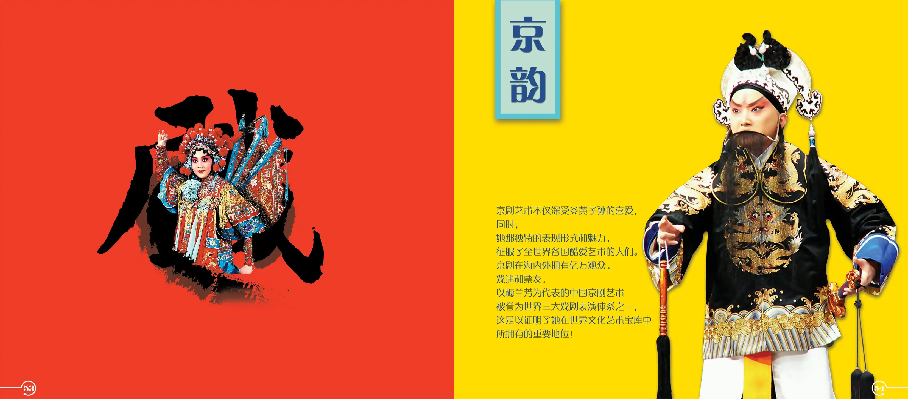
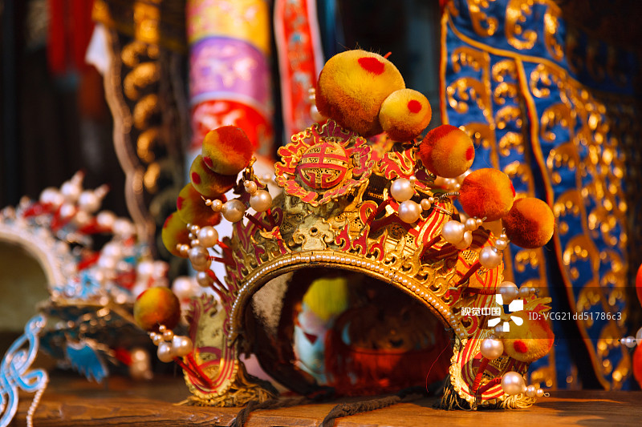
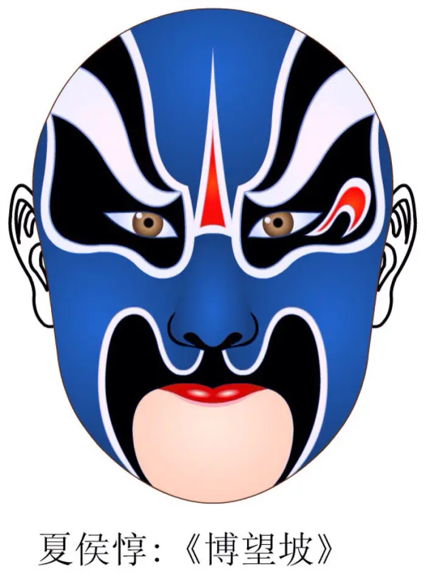
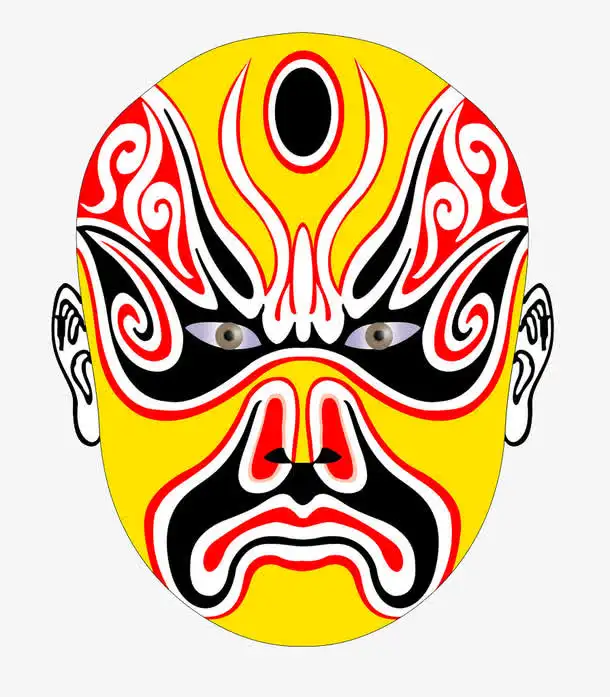
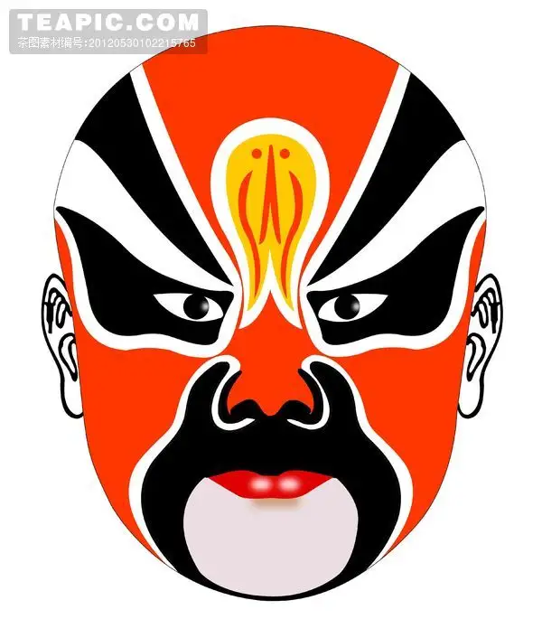

京剧角色

角色详解:
京剧角色，又称京剧行当，指的京剧里面各种人物的扮相，主要可分为生、旦、净、末、丑，共五个大类，而每个大类之中，又包含诸多小类。
"生"分为:“老学生”——指以正派人物或帝王形象出现的成熟中年男性。“小众”——一个年轻人。
"旦"分为:“青衣”——指中年妇女，一般指名门望族的妻子和小姐。“武丹”——指能打仗的女人。“花旦”——指少女、社会底层女性等“宫女”。
"净"指的是各种画脸，一般都是扮演性格、品质或外貌都有特色的男性角色。
"末"也属于老阶层，但应该是年龄偏大，思维混乱，生活底层。因化妆时在鼻梁上涂一小块白粉而俗称“小花脸”，因与大花脸、两个边角干净的花脸并列而俗称“三花脸”。
"丑"指小华的脸。大部分还表现了生活在社会底层的人，民间的义士等等，聪明风趣。
了解角色



经典介绍:
其实想要了解京剧中演员所扮演的角色，先要了解一些常规戏曲中的人物，再通过演员脸上的脸谱就能知道他演的是谁。通常情况下，脸谱主要分为红脸、黑脸、蓝脸、绿脸、黄脸、白脸、金脸以及银脸这几种。其中红脸代表忠勇；黑脸代表猛智；蓝脸和绿脸代表草莽英雄；黄脸和白脸代表凶诈凶恶；金脸和银脸代表神妖。
京剧小常识

二黄和西皮是两种声腔的总称。在这两种声腔中还包括着许多板式。如：原板、慢板、流水、快板、散板等。因此，从体制和结构的角度上看，这类唱腔均属于“板腔体”之类。
关注中国京剧艺术团